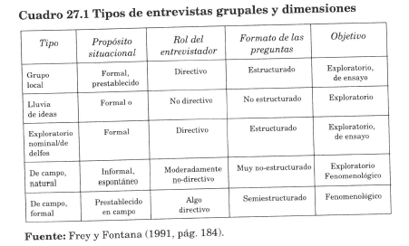
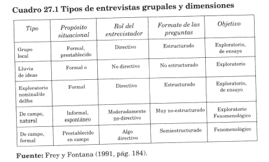

Elkarrizketa
Ikertzailearen eta informatzaileen arteko aurrez aurreko topaketak, informatzaileek beren bizitza, esperientzia edo egoerei buruz dituzten ikuspegiak ulertzeko, beren hitzekin adierazten dituzten moduan.
(Taylor & Bogdan, 1994)
Taylor S.J. y Bogdan R. (1994). Introducción a los métodos cualitativos de investigación. Paidós.
Elkarrizketa motak (Corbeta, 2010)
- Egituratua: Galderen zerrenda berdina subjektu guztientzat. Formulazio bera eta ordena berean. Estimulu berdinen aurrean erantzuteko askatasun osoa.
- Erdi-egituratua: Landu beharreko gaien gidoia, gai jakinak; baina ordena eta formulazio askea, elkarrizketatzaileak baloratu beharrekoa.
- Ez egituratua: Ez dago galdera-edukirik. Oinarrizko gaia bakarrik, edukia elkarrizketatuaren arabera alda daiteke.
- Bestelakoa: ez gidatua, klinikoa, behatzaile pribilegiatuak, talde elkarrizketak...
Corbetta, P. (2010). Metodología y técnicas de investigación social. Mc GrawHill.
2.4.- Datuak Jasotzeko Tresnak
Ikerketan datuak lortzeko zein TEKNIKAK, TRESNAK EDO ESTRATEGIAK aurrera erabiliko diren argituko.
Teknika, tresna eta estrategiaren arteko ezberdinketa (Navarro eta al., 2016)
Teknika: ikertzaileak sistematikoki jarraitzen duen estrategia, prozedura edo prozedura-multzoa da, planteatutako galderei erantzuteko behar duen informazioa lortzeko. Nagusiki, behaketa, inkestak, elkarrizketak, testak eta dokumentuen analisiak hartzen dira teknikatzat.
Tresnak edo tresnak: materiala da, errealitate fisiko eta kategoriko kanpoko eta independentea duten objektuak, informazioa aldez aurretik zehaztutako helburu batzuen arabera biltzeko edo erregistratzeko aukera ematen dutenak; adibidez, kontrol-zerrenda bat, landa-egunkari bat, iritzi-galdetegi bat, elkarrizketa egituratu baten gidoia. Tresna batzuk informazioa biltzeko teknika desberdinekin erabil daitezke.
Baliabidea: aurrez zehaztu gabeko informazioa lortzeko eta erregistratzeko erabiltzen ditugun bitartekoak dira, hau da, ikertzailearen esku ez daudenak; adibidez, bideoa edo audio-grabagailuak.
Navarro Asencio (Coord.), E., Jiménez García, E., Rappoport Redondo, S., & Thoilliez Ruano, B. (2017). Fundamentos en la investigación educativa. UNIR Editorial.
Kuantitatiboak
- Galdetegia
- Test edo Proba Estandarizatuak
- Neurketa-tresnak
- Datu-Baseak
- Proba Objetiboak
Kualitatiboak
- Elkarrizketa
- Talde Fokalak
- Eztabaida-Taldeak
- Behaketa
- Egunkariak eta Erregistroak
- Dokumentuak
Ikusizko laguntza
Corbetta, P. (2010). Metodología y técnicas de investigación social. Mc GrawHill.
 

Fontana, A. & Frey, J. H. (2013). Estudios de casos cualitativos (Vol. IV). In N. K. Denzin, & Y. Lincoln (Eds.), Manual de investigación cualitativa (pp. 140-202). Gedisa.
2.5.- Prozesua
Ikerketan egin diren pausu guztiak adieraziko dira. KRONOGRAMA (Gantt Diagrama) batean fase ezberdinetan kokatzea idei ona da.
- FASE: PLANIFIKAZIOA ETA IRAKURKETA (kontaktu, irakurketa, zehaztu zenekin)
- FASE: INFORMAZIOA JASOTZEKOA / LANDA LANA FASEA (ELKARRIZKETAK) (noiz, nola, … egin dira)
- FASE: ANALISIA
- FASE: ZABALTZE (txosten bat idatzia, posterra, txostena partekatu, emaitzen aurkezpen bat egin eskola batean, komunikabideetan...)
Ikusizko laguntza


2.7.- Inplikazio Etikoak
Ikerketa egiteko baimenak eskatu dira? Nola? Baimen informatua izan da?
Gure ikerketaren balioa, Arriskuen eta onuren azterketa eta gure ikerketaren kanpo-ebaluazioa egin behar da, printzipio hauek betetzen diren ala ez jakiteko. (Jorrín, 2021)
- Kalterik edo kalterik ez eragitea
- Pribatutasuna eta anonimotasuna errespetatzea
- Konfidentzialtasuna errespetatzea
- Baimen informatuaren beharra
- Informatzaileekin konfiantzazko atmosfera sortzeko beharra
- Intrusismoa saihestea
- Jokabide desegokiak saihestea, salatzea eta gaitzestea
- Datuen iruzurrezko interpretazioa saihestea
Jorrín Abellán, I. M., Fontana Abad, M., & Rubia Avi, B. (2021). Investigar en educación : manual y guía práctica. Síntesis.
Ikusizko laguntza

Jorrín Abellán, I. M., Fontana Abad, M., & Rubia Avi, B. (2021). Investigar en educación : manual y guía práctica. Síntesis.
Baiemen Informatua
ADOSTASUNA
SUBJEKTUAREN ESKUBIDEETAN PARTE HARTZEAREN ADIERAZPENA SUBJEKTUAREN ESKUBIDEAK ITURRIA Ikerketa baterako borondate aske eta kontzientea da, gai den pertsona batek edo haren ordezkari baimenduak baliozkotasunez emana, informazio egokiaren aurretik.
ONESPEN DOKUMENTUA
Honako hau jasotzen duen dokumentua da:
Proiektuan parte hartzeko eskatzean, erreklutatutako pertsonari eman zaion informazioaren laburpena.
Eta onarpena berresten duten datuak eta sinadurak.
BAIMEN INFORMATUA
"Baimen informatua" ez da berez dokumentu bat, baizik eta esamolde bat, pertsona batek ikerketa batean aztergai gisa parte hartzea onartu edo onartu ahal izateko, lehenago informazio-prozesu oso bat egon behar duela adierazten duena. Beraz, baimen hori idatzizko dokumentu batean jaso behar bada ere, paper horrek ez du balio izango informazio egokiaren babesa ez badu.
Baimen informatua sinadurak eta nahitaezko puntuak biltzen dituen dokumentu bakar batean ager daiteke, edo bitan bana daiteke:
- Informazio-orria, datu garrantzitsuak ematera bideratua, parte hartzeko eskatzen zaion subjektuak erabaki aske eta informatu bat har dezan, eta, beraz, parte-hartzaileari hizkuntza eta forma egokian zuzendua.
- Baimen-orria sinadurekin eta nahitaezko puntuekin.
Ikusizko laguntza